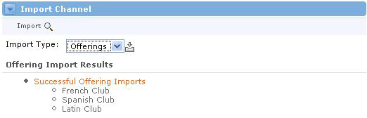

Why Import?
Importing Users and Offerings is a quick way to get the system populated with your information. It is much quicker than manually creating every user and offering, one at a time. When you import a file of users, for example, you could list 100 users in 100 lines. The import time would take a couple seconds. Creating these user accounts manually could take hours.
Preparing the User Import File The file you import must be a text file, and it must contain the following information in this order:
The file itself must contain XML tags in order for the system to read them in correctly. Here's the correct format for a file: <pre> This file would create two users:
|
Preparing the Offering Import File The file you import must be a text file, and it must contain the following information in this order:
The file itself must contain XML tags in order for the system to read them in correctly. Here's the correct format for a file: <offeringList> This file would create two offerings:
|
Importing Users or Offerings Now that you have the correct file format, importing the file itself is easy.
 |